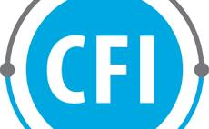
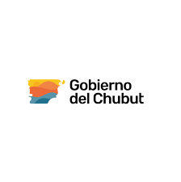

Diseñamos arquitectura pública que integra lo que ya existe.
No desarrollamos software propio. Diseñamos la estructura conceptual, operativa y cultural que permite que los sistemas, áreas y equipos de su gobierno funcionen como un solo organismo.
Somos
una
API Humana.
Así como una API tecnológica permite que distintos softwares dialoguen entre sí sin fricción, nosotros diseñamos el protocolo humano, organizacional y metodológico que permite que las instituciones funcionen integradas.
Misión
Impulsar la transformación de la gestión pública y organizacional a través de un método riguroso, colaborativo y adaptable para construir organizaciones más inteligentes.
Visión
Ser referentes en la modernización de procesos en Argentina y la región, combinando evidencia, cercanía y resultados tangibles.
Valor Diferencial
- Equipo interdisciplinario: Perfiles de diseño, comunicación, ciencia política, economía y sociología para un abordaje integral.
- Equilibrio estratégico: Dialéctica entre lo político, lo organizacional y lo técnico para soluciones viables.
- Experiencia en gestión: Resultados comprobados en gobiernos y organizaciones de alta escala.
- Conocimiento del territorio: Mapeo de actores y articulación para responder a necesidades reales.
- Método validado: Escucha activa y planificación estratégica con resultados replicables.
- Impacto Humano: Dejamos capacidad instalada para que los cambios sean sostenibles en el tiempo.
Quiénes Somos
Combinamos excelencia técnica, visión política y compromiso social para transformar la gestión pública desde una perspectiva integral y humana.
Laura Melgarejo
Ing. en Telecomunicaciones
Lihuen Bezzo
Diseñadora Industrial
Victoria Bohl
Lic. Ciencia Política
Abril Manessi
Lic. Relaciones Int.
Delfina Gonzalez
Lic. Ciencia Política
Belen Silva
Lic. Psicología
Debora Irigo
Lic. en RRPP
Giuliano Donnes
Lic. Economía
"Somos un equipo interdisciplinario que transforma datos en decisiones. Diseñamos, analizamos e implementamos políticas públicas que generan impacto real."
Comité de Asesores Institucionales
Agradecemos profundamente a la red de profesionales y especialistas que donan su tiempo, conocimiento y experiencia de forma "ad honorem" para potenciar el impacto de nuestra arquitectura pública.
Facundo Carrillo
Ernesto Bruggia
Mariano Volino
Daigana Salgado
Mariela Gallo
Verticales de Acción
Identificamos y potenciamos las verticales críticas donde la tecnología y la gestión se encuentran para generar valor real en la ciudadanía.
Innovación y optimización
Gestión de proyectos
Capacitaciones y formación
Investigaciones y papers
Sectores de Impacto
Nuestra arquitectura pública se despliega en diversos ámbitos, asegurando que la interoperabilidad y la eficiencia lleguen a todos los niveles de la organización.
Sector Público
- • Municipios y Gobiernos Provinciales
- • Empresas Estatales y Entes Descentralizados
- • Poder Judicial y Legislativo
- • Salud Pública y Educación
Sector Privado
- • Utilities (Energía, Agua, Gas)
- • Bancos, Fintechs y Seguros
- • Retail, Logística y Transporte
- • Salud y Clínicas Privadas
Organismos
- • ONGs y Fundaciones Internacionales
- • Cámaras Empresariales y Sindicatos
- • Universidades y Centros de Investigación
- • Parques Tecnológicos y Labs
Marco Metodológico
Un proceso iterativo y colaborativo diseñado para asegurar que cada intervención sea sostenible, escalable y centrada en resultados medibles y ciudadanos.
Investigación y Diagnóstico
- • Relevamos procesos, prácticas y experiencias reales.
- • Mapeamos actores, áreas de influencia y puntos críticos.
- • Analizamos normativa, documentación e infraestructura.
- • Recogemos evidencias mediante encuestas y observación directa.
Diseño y Co-Creación
- • Co-creamos propuestas priorizando impacto y viabilidad.
- • Trazamos journeys y flujos de trabajo optimizados.
- • Definimos estructuras, roles y dotaciones funcionales.
- • Diseñamos indicadores y tableros para el seguimiento (BI).
Ejecución y Despliegue
- • Ejecutamos planes con enfoque ágil y orientado a resultados.
- • Activamos procesos y sistemas clave para la transformación.
- • Acompañamos el cambio cultural y la adopción de nuevas formas.
- • Ajustamos estrategias en tiempo real para maximizar impacto.
Implementaciones consolidadas e infraestructura junto a

'">


'"> '">
 '">
'">
'">
'">
'">
'">
Histórico de Implementación
Métricas consolidadas de la eficacia de nuestra arquitectura pública a nivel regional e integral.
Provincias
Ministerios
Agentes Cap.
Ciudadanos
CSAT Local
Tiempos de Rta.
Evidencia Institucional
Intervenciones reales con resultados medibles que transformaron la operación de gobiernos y organizaciones.
Modernización Integral de Trámites y Procesos
Problema Detectado
Tiempos de resolución superiores a 45 días (TMA), baja trazabilidad documental y atención fragmentada en silos.
Intervención
Diseño de arquitectura de flujos y acompañamiento en implementación de BPM para +800 agentes.
Resultado
-42%
Tiempos
100%
Trazables
Alcance: 12 Ministerios · 35 Nodos · Omnicanalidad
Rediseño de la Experiencia Ciudadana y CX
Problema Detectado
Insatisfacción crítica por fricción en puntos de contacto y falta de gobierno de datos unificados para directivos.
Intervención
Mapeo de Journey ciudadano y diseño de tableros de control analítico sobre ecosistemas existentes.
Resultado
+28pts
CSAT
5
Nodos Std.
Alcance: Red de Centros de Participación · Portal Web
Entre Ríos con Vos
Dispositivo territorial itinerante para acercar servicios del Estado a los barrios: salud, identidad y asesoramiento legal en un solo flujo operativo.
+50
Nodos Activos
Puntos de atención territorial desplegados en la provincia, con cobertura de servicios integrados.
"Transformamos la cercanía en un método de gestión medible y eficiente."
Testimonios de Impacto
La confianza de quienes lideran la gestión pública y privada avala nuestro compromiso con la excelencia y la innovación metodológica.
"La metodología aplicada nos permitió unificar procesos críticos, mejorando el servicio al ciudadano."
Organismo Provincial
Entre Ríos
"El enfoque en la arquitectura pública integrada cambió nuestra forma de medir resultados. Gestión basada en evidencia."
Secretaría de Modernización
Santa Fe
"Un aliado estratégico para el diseño de programas sociales complejos. Profesionalismo y mirada humana."
ONG Internacional
Buenos Aires
"La transparencia y el rigor técnico de la Red Social son su mejor carta de presentación en el ámbito público."
Ministerio de Economía
Chubut
Serie Documentos Técnicos
Nuestra biblioteca de conocimiento abierto ofrece marcos conceptuales y guías prácticas para la implementación de políticas públicas modernas.
Arquitectura Pública Integrada
"Del sistema fragmentado a la gobernanza operativa"
Consultar DocumentoCultura de Ejecución
"Cómo sostener la transformación en el sector público"
Consultar DocumentoInteroperabilidad Institucional
"Cómo integrar sistemas sin reemplazarlos"
Consultar DocumentoSistema de Métricas Públicas
"Cómo medir gestión sin burocratizarla"
Consultar DocumentoAtención como Sistema
"Del canal aislado a la experiencia integrada"
Consultar DocumentoContinuidad Institucional
"Cómo sostener la transformación más allá de las gestiones"
Consultar DocumentoFinanciamos investigación aplicada
El diseño de una arquitectura pública eficiente requiere independencia analítica. Aceptamos aportes orientados exclusivamente al desarrollo de papers técnicos y protocolos de código abierto.
Socio Activo
Aporte inicial para sustentar investigaciones técnicas.
$5.000 ARS
Donar con Mercado PagoSocio Institucional
Impulso a programas territoriales de escala.
$25.000 ARS
Donar con Mercado PagoSocio Estratégico
Apoyo estructural a la infraestructura del Think Tank.
$100.000 ARS
Donar con Mercado PagoFormulario de Contacto
Déjanos tu mensaje y nuestro equipo interdisciplinario se pondrá en contacto a la brevedad.
Solicitud de Evaluación Técnica
Completá tus datos y nuestro Comité Técnico evaluará tu caso con el diagnóstico de madurez adjunto.